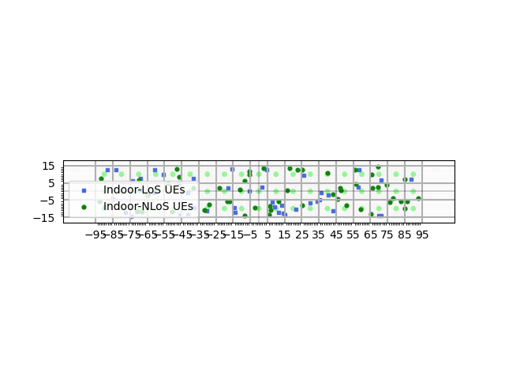
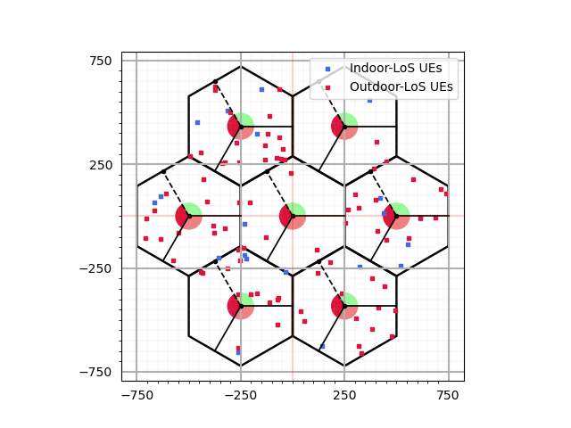

Simulation Layout
This module provides classes and the functions that implements Simulation Layout. [3GPPTR38901_SimLayout]
Simulation Layout correspond to deploying Base Stations (BSs) and dropping user equipments (UEs) in a chosen geometry. Current implementation support different types of BS layouts such as “Hexagonal” and “Rectangular”, different types of UE drops such as “Hexagonal”, “Rectangular” and “Circular”.
The class SimulationLayout allows the user to deploy BSs, as well as UEs in a particular geometry.
The user can access the state of each link using the class attribute linkState , locations of BSs through BSLocations, tracks or locations of BS across snapshots through BStracks,
velocities of each BS through BSvelocityVector and BS orientations through bsOrientation.
User can access all the cluster level parameters from the method getParameterGenerator().
- class toolkit5G.ChannelModels.SimulationLayout(numOfBS, numOfUE, heightOfBS, heightOfUE, ISD, layoutType='Hexagonal', ueDropMethod=None, UEdistibution=None, UEheightDistribution='random', numOfSectorsPerSite=1, minUEBSDistance=0, layoutWidth=None, layoutLength=None, timeInstances=array([0]), orbitParameters=array([[600., 0., 0.78539816]]), initSatelliteParameters=array([[1.57079633, 1.57079633, 0.78539816]]), bsRoute=None, ueRoute=None, useInitueLocations=False, radiusForCircularUEDrop=None, force3GPPSpatialConsistencyParameters=True, enableSpatialConsistencyLoS=False, memoryEfficient=False, correlationTypeLoS='Exponential', correlationDistanceLoS=50, enableSpatialConsistencyIndoor=False, correlationTypeIndoor='Exponential', correlationDistanceIndoor=50)[source]
A class for generating Simulation Layout. Support important features such as computing Line of Sight (LOS) probability for different scenario or terrain. It can also display the 2D plot of simulation layout using
display2DTopology()method.Example
>>> simLayoutObj = SimulationLayout(numOfBS = 19, ... numOfUE = 100, ... heightOfBS = 25, ... heightOfUE = 10, ... ISD = 500, ... layoutType = "Hexagonal", ... numOfSectorsPerSite = 3, ... minUEBSDistance = 35) >>> simLayoutObj(terrain = "UMa", carrierFreq = 5)
Above code snippet shows basic instantiation of
SimulationLayoutclass with 3 sector “Hexagonal” layout having 19 BSs, 100 UEs with an ISD of 500 meters and with a carrierFreq of 5 GHz for the terrain “UMa”. More examples can be found in the sections below.- Parameters:
numOfBS (int or NumPy.ndarray of int) – Number of Base Stations(BSs) in simulation. Must be a positive int or array of positive int.
numOfUE (int) – Number of User Equipment(UE) in simulation. Must be positive.
heightOfBS (int or float) – height of each BS in meters. Must be a positive number.
heightOfUE (int or float) – height of each UE in meters. Must be a positive number.
ISD (int or float) – InterSite Distance. Defined as distance between neighbouring sites. Must be positive.
layoutType (str) – Specifies the geometry of placement of all the BSs. Defaults to “Hexagonal”. Supported
layoutTypeare “Rectangular” and “Hexagonal”ueDropMethod (None or str) – Specifies the geometry of UE drops. Defaults to None. In the default case it takes the same geometry as BS
layoutTypeSupportedueDropMethodare “Rectangular” , “Hexagonal” and “Circular”UEdistribution (None or str) – Specify the way in which the UEs are distributed for a chosen
ueDropMethodDefaults to None. In the default case it takes the value “random”. i.e., all the UEs are dropped randomly in the choosen geometry.If
ueDropMethodis “Hexagonal” then supportedUEdistibutionare “random” or “equal”.For “random”, UEs are distributed randomly anywhere in the hexagonal grid connecting all the edges of the outermost hexagons.
For “equal”, number of UEs distributed in each hexagon of a grid are equal.
If
ueDropMethodis “Rectangular” then supportedUEdistibutionare “random” or “uniform”.For “random”, UEs are distributed randomly anywhere inside the rectangle.
For “uniform”, UEs are distributed as a grid of uniformly distributed points inside a rectangle.
If
ueDropMethodis “Circular” then supportedUEdistibutionis “random”. For “random”, UEs are distributed randomly anywhere inside a circle.
UEheightDistribution (str) –
Specify how the heights of UE are distributed in the simulation.
Defaults to “random”, means UE heights can take any random value between 0 to
heightOfUECan also take “equal”, means all the UE heights are of the same. i.e.,
heightOfUE
numOfSectorsPerSite (int) – Number of sectors per site. Must be a positive integer. Defaults to 1.
minUEBSDistance (int or float) – minimum distance between BS and UE. Must be positive and less that half of
ISDlayoutWidth (None or int or float) –
Width of the BS layout. Must be Positive. Defaults to None.
In the default case it takes the value of
ISDfor “Hexagonal” layoutISD* (num of BS along columns) for “Rectangular” layout.
layoutLength (None or int or float) –
Length of the BS layout. Must be Positive. Defaults to None.
In the default case it takes the value of
ISDfor “Hexagonal” layout.ISD* (num of BS along rows) for “Rectangular” layout.
timeInstances (numpy.ndarray of int or float) – Specify the time instance at each snapshot for all the mobile nodes in simulation. Must be a non decreasing numpy array of int/float.
orbitParameters (numpy.ndarray) –
Specifies orbit parameters, namely satellite altitude, eccentricity, and inclination angle, passed as an array.
satellite altitude specifies altitude of satellite from the surface of earth. Defaults to 600 meter.
eccentricity specifies the eccentricity of satellite orbit. The eccentricity of an orbit indicates the deviation of the orbit from a perfect circle. A circular orbit has an eccentricity of 0, while a highly eccentric orbit is closer to 1. Defaults to 0 and must be in the interval [0,1].
inclination angle specifies the inclination angle between satellite orbital plane and equitorial plane in radians. Defaults to \(\frac{\pi}{4}\).
initSatelliteParameters (numpy.ndarray) –
Specifies initial satellite position parametes such as Longitude ascending node, Argument of Periapsis and Eccentric Anomaly passed as an array.
Longitude ascending node specifies the angle between equinal vertox and ascending node in radians. Defaults to \(\frac{\pi}{2}\).
Argument of Periapsis specifies the angle between line of ascending node and perigee in radians. Defaults to \(\frac{\pi}{2}\).
Eccentric Anomaly specifies angle between perigee and position of satellite in radians. Defaults to \(\frac{\pi}{4}\).
bsRoute (None or NodeMobility) – Route or location of all the BSs across different snapshots. Defaults to None. Must be a single or array of object(s) of the class
NodeMobilityueRoute (None or NodeMobility) – Route or location of all the UEs across different snapshots. Defaults to None. Must be a single or array of object(s) of the class
NodeMobilityuseInitueLocations (bool) – A boolen variable or flag specifying whether initial UE locations of the SimulationLayout class are the same as initial UE locations generated at
NodeMobilityclass or not. Defaults to False, means initial UE locations ofSimulationLayoutclass are not based on initial UE locations ofNodeMobilityclass.radiusForCircularUEDrop (None or int or float) –
Radius of circular
ueDropMethod. Must be positive. Defaults to None.In the default case it takes the value of
ISDfor “Hexagonal” layout0.5 *
ISD* (num of BS along rows + num of BS along columns) for “Rectangular” layout.
force3GPPSpatialConsistencyParameters (bool) – A boolean variable to enable/disable spatial consistency specified according to 3GPP TS 38.901. Defaults to True.
If this parameter is True, then the parameters are automatically picked up from the 3GPP tables based on the terrain and link state.
If this parameter is False, then the user has to pass all the parameters manually using variables
correlationDistanceLoS,correlationTypeLoS,correlationTypeIndoor, andcorrelationDistanceIndoor.
enableSpatialConsistencyLoS (bool) – A boolean flag to enable/disable spatial consistency for LOS state. Defaults to False.
memoryEfficient (bool) – A boolean variable to enable/disable memory efficient computations. If this variable is true, then the implementation uses less memory/RAM but slows down the execution. Defaults to False.
correlationTypeLoS (str) – Specifies LOS correlation type. It can take values from the set {“Exponential”, “Gaussian”}. Defaults to “Exponential”.
correlationDistanceLoS (int) – Specifies correlation distance in meters for LOS state. Must be a positive int and defaults to 50 meter.
enableSpatialConsistencyIndoor (bool) – A boolean variable to enable/disable spatial consistency for indoor scenarios such as indoor hotspot or indoor factory. Defaults to False.
correlationTypeIndoor (str) – Specifies correlation type for indoor scenario. It can take values from the set {“Exponential”, “Gaussian”}. Defaults to “Exponential”.
correlationDistanceIndoor (int) – Specifies correlation distance in meter for indoor scenario. Must be positive and defaults to 50 meter.
Important
If
layoutTypeis “Rectangular” thennumOfBSmust be a numpy array of shape (2,)i.e.,``numOfBS`` = np.array([ num of BS along rows, num of BS along columns ])
- Input:
terrain (str or NumPy.ndarray of str) – Propagation scenario/terrain for fast fading Spatial Channel Model (SCM) from section 7.5 of TR 38.901. When passed as a numpy array it takes a shape of (3,). i.e., array of 3 terrain each correspond to BS-UE, UE-UE and BS-BS links respectively.
Current implementation support the following scenario or
terrainRural Macro “RMa”
Urban Macro “UMa”
Urban Micro “UMi”
Indoor Hotspot - Open Office “InH-OO”
Indoor Hotspot - Mixed Office “InH-MO”
Indoor Factory - Sparse clutter Low BS “InF-SL”
Indoor Factory - Sparse clutter High BS “InF-SH”
Indoor Factory - Dense clutter Low BS “InF-DL”
Indoor Factory - Dense clutter High BS “InF-DH”
Indoor Factory - High Tx High Rx “InF-HH”
This variable also caputures the type of Tapped Delay Line (TDL) or Cluster Delay Line (CDL) model for link-level simulations.
Three CDL models, namely “CDL-A”, “CDL-B” and “CDL-C” for NLOS while “CDL-D” and “CDL-E” are for LOS. Ref: section 7.7.1 of TR 38.901.
Three TDL models, namely “TDL-A”, “TDL-B” and “TDL-C” for NLOS while “TDL-D” and “TDL-E” are for LOS. Ref: section 7.7.1 of TR 38.901.
carrierFreq (int or float or NumPy.ndarray of int or float) – Carrier Frequency in Hz. Must be positive. When passed as a numpy array it takes a dimension of 1 or shape (num of carrier frequencies, ) with all the entries taking positive ints or floats.
ueAntennaArray (None or AntennaArrays or NumPy.ndarray of AntennaArrays.) –
Antenna Array of every UE in the simulation. Defaults to None.
In the default case Antenna Array of all the UEs are having the following configuration
antennaType=”OMNI”,arrayStructure= np.array([1,1,1,1,1],antennaSpacing= np.array([1, 1, 1, 1]).When passed as a numpy array, the size has to match with the size of
carrierFreqarray. Otherwise unexpected results turn up.
bsAntennaArray (None or AntennaArrays or NumPy.ndarray of AntennaArrays) –
Antenna Array of every BS in the simulation. Defaults to None.
In the default case Antenna Array of all the BSs are having the following configuration
antennaType=”3GPP_38.901”,arrayStructure= np.array([1,1,1,1,1],antennaSpacing= np.array([1, 1, 1, 1]).When passed as a numpy array the size has to match with the size of
carrierFreqarray. Otherwise unexpected results turn up.
indoorUEfraction (int or float) – Specifies the ratio of num of indoor UEs to the total num of UEs in the simulation. Defaults to 0.2 Note that every value must be positive and lie in the closed interval [0,1] as it is a fraction.
lengthOfIndoorObject (int or float) – Length of indoor object assuming the object geometry as a rectangle. Must be a positive number. Defaults to 1 meter.
widthOfIndoorObject (int or float) – Width of indoor object assuming the object geometry as a rectangle. Must be a positive number. Defaults to 1 meter.
heightOfRoom (int or float) – Height of the Room or Ceiling. Must be a positive number taking values from the interval [minVal, maxVal]. where minVal, maxVal are terrain dependent. Defaults to 3 meter.
For Indoor Factory Dense scenario minVal = 5 and maxVal = 15.
For other Indoor Factory scenario minVal = 5 and maxVal = 25.
For all the other scenario minVal = 0 and maxVal = any positive int or float greater than 0.
Note that every value is assumed to be in meters.
minNumberOfFloors (int) – Minimum number of floors. Must be a positive int greater than or equal to 0. Defaults to 1. Valid only for Indoor Scenario.
maxNumberOfFloors (int) – Maximum number of floors. Must be a positive int greater than or equal to 0. Defaults to 1. Valid only for Indoor Scenario.
forceLOS (bool) – A boolean variable specifying whether every link state to be forced to LOS or not. Defaults to False correspond to every link state value is being generated by computation of probability of LOS. If true, then every link state value is forced to LOS with out invoking the computation of LOS probability.
is3GPPBaseline (bool) – A boolean variable specifying whether all the parameters or variables are in compliant with 3GPP or not. Defaults to true making all the variables 3GPP compliant. Current implementation support variables to take any value not necessarily restricted to 3GPP base line.
clutterHeight (int or float) – Height of the clutter in Indoor Factory scenario. Defaults to 5 meter. Must be a positive number and should not exceed minimum(10,heightOfRoom), where every value is assumed to be in meters.
clutterSize (int or float) –
Size of the clutter in Indoor Factory scenario. Must be a positive number.
If
is3GPPBaselinetrue and if the scenario is Sparse, then it takes a value of 10, which is the default value.If
is3GPPBaselinetrue and if the scenario is Dense, then it takes a value of 2.If
is3GPPBaselinefalse then it must be a positive number from the interval [minVal, maxVal], where the maxVal should always be greater than or equal to the minVal.
clutterDensity (int or float) –
Density of the clutter in Indoor Factory scenario. Must be a positive number lies in the range [minVal, maxVal]. Defaults to 0.4.
If
is3GPPBaselinetrue and the scenario is Dense takes a minVal = 0.4 and maxVal = 1.If
is3GPPBaselinetrue and the scenario is Sparse takes a minVal = 0 and maxVal = 0.4.For all the other cases it must take minVal = 0 and maxVal = 1.
Note that all the values are assumed to be in meter.
Important
Supported terrain are:
SCM \(\rightarrow\) {“RMa”, “UMa”, “UMi”, “InH-OO”, “InH-MO”, “InF-SL”,”InF-SH”, “InF-DL”, “InF-DH”, “InF-HH”}.
CDL \(\rightarrow\) {“cdl-a” or “CDL-A”, “cdl-b” or “CDL-B”, “cdl-c” or “CDL-C”, “cdl-d” or “CDL-D”, “cdl-e” or “CDL-E”}
TDL \(\rightarrow\) {“tdl-a” or “TDL-A”, “tdl-b” or “TDL-B”, “tdl-c” or “TDL-C”, “tdl-d” or “TDL-D”, “tdl-e” or “TDL-E” }.
User can also access the attribute``supportedTerrains`` to see the list of supported terrain.
- Raises:
ValueError – If
numOfBSis neither a number nor a numpy array.ValueError – If
numOfUEis not an instance of int type/ an int type and not positive.ValueError – If
heightOfBSis not an instance of int type/ an int type and not positive.ValueError – If
heightOfUEis not an instance of int type/ an int type and not positive.ValueError – If
ISDis not an instance of int/float type / an int/float type and not positive.ValueError – If
layoutTypeis not an instance of str type / a str and does not belong to the list [“Hexagonal”, “Rectangular”]ValueError – If
terrainis not an instance of str/ a str and not belong to the list of supported terrain [“RMa”, “UMa”, “UMi”, “InH-OO”, “InH-MO”, “InF-SL”, “InF-SH”, “InF-DL”, “InF-DH”, “InF-HH”]ValueError – If
carrierFreqis neither a number nor a numpy array. If number and not an instance of int/float If numpy array and dimension other than 1 / elements of an array are not instances of int/float / elements of an array are either ints/floats but not positive.
- property BSLocations
Specifies the initial locations of Base Stations (BSs). These comes as an attribute from the chosen BS
layoutTypeclass
- property ISD
Specifies Inter Site Distance or the distance between neighbouring sites. Assumed to be in meters
- property UELocations
Specifies the initial locations of User Equipments (UEs). These comes as an attribute from the chosen UE
ueDropMethodclass
- property UEdistibution
Specify the Distribution of User Equipments (UEs) for a chosen UeDropMethod
- property UEheightDistribution
Specify the Distribution of heights of User Equipments (UEs) in the simulation
- property bsAntennaArray
Object(s) of the class AntnennaArrays for each carrier frequency at BS side
- property bsRoute
Route or Track or Locations of Base Station across snapshots.
- property carrierFrequency
Carrier or Center Frequency in GHz. Multiple Carrier Frequencies are supported in the current implementation. User can pass array of carrier frequencies all assumed to be in GHz.
- property clutterDensity
Density of the clutter for Indoor Factory scenario or terrain
- property clutterHeight
Height of the clutter for Indoor Factory scenario or terrain
- property clutterSize
Size of the clutter for Indoor Factory scenario or terrain
- property correlationDistanceIndoor
This property specifies the correlation distance in meters for Indoor scenario.
- property correlationDistanceLoS
This property speicifies the correlation distance in meters for LOS state.
- property correlationTypeIndoor
Specifies the type of spatial/geometrical correlation to be used for Indoor scenario..!
- property correlationTypeLoS
Specifies the type of spatial/geometrical correlation to be used on the generating LoS link state!
- property enableSpatialConsistencyIndoor
A boolean flag to enable spatial consistency for Indoor scenario.
- property enableSpatialConsistencyLoS
A boolean flag to enable spatial consistency for LoS State configuration.
- property force3GPPSpatialConsistencyParameters
A boolean flag to enable/disable 3GPP compliant spatial consistency parameters.
- property forceLOS
A boolean flag specifying whether to force every link to Line of Sight (LOS) state or not. By default it is False.
- property heightOfBS
Specifies the Height of the Base Station (BS). Assumed to be in meters.
- property heightOfRoom
height of the room or ceiling in meters. Valid for Indoor scenario or terrain such as Indoor HotSpot or Indoor Factory
- property heightOfUE
Specifies the Height of the User Equipment (UE). Assumed to be in meters
- property indoorUEfraction
This property specifies the percentage of num of indoor UEs to the total number of UEs in simulation. Assumed to be specified as a ratio
- property layoutLength
This is the property which captures Length of Rectangular layout in meters
- property layoutType
Specifies the type of Layout. i.e., the type of geometry chosen for BS deployment
- property layoutWidth
This is the property which captures Width of Rectangular layout in meters
- property lengthOfIndoorObject
This property specify the length of indoor object. Assumed to be of rectangular geometry and the length is in meters
- property maxNumberOfFloors
Specifies the maximum number of floors for indoor scenario such as Indoor Office or Indoor Factory.
- property memoryEfficient
A boolean flag to configure the module in memory efficency mode. This will slow the implementation but reduces the memory consumption.
- property minNumberOfFloors
Specifies the minimum number of floors for indoor scenario such as Indoor Office or Indoor Factory.
- property minUEBSDistance
Property specifying the minimum distance between Base Station (BS) and User Equipment (UE)
- property numOfBS
Number of Base Stations (BSs) specified in the simulation
- property numOfSectorsPerSite
Number of sectors per each site or micro site specified in the simulation
- property numOfSnapShots
Specifies the Number of Snap Shots or the illustration of BSs and UEs at different locations or time instants
- property numOfUE
Number of User Equipments (UEs) specified in the simulation
- property radiusForCircularUEDrop
This property speicifies the Radius of Circle when UE UeDropMethod chosen is “Circular”
- property routeType
Specifies the type of track or route of each node (either BS or UE) in the simulation. Current implementation support “randomWalk”
- property terrain
Specifies the propagation terrain or scenario at which the simulation is being carried out. Current implementation support both Outdoor and Indoor scenario when simulation is carried out for Spatial Channel Model (SCM). Outdoor scenario includes Rural Macro, Urban Macro, and Urban Micro. Indoor scenario includes Indoor Hotspot, and Indoor Factory. All the Clustered Delay Line (CDL), Tapped Delay Line (TDL) model are also being supported.
- property ueAntennaArray
Object(s) of the class AntnennaArrays for each carrier frequency at UE side
- property ueDropMethod
Specifies the method of UE drop. i.e., the type of geometry chosen for UE drops
- property ueRoute
Route or Track or Locations of User Equipment (UE) across snap shots.
- property widthOfIndoorObject
This property specify the width of indoor object. Assumed to be of rectangular geometry and the width is in meters
- SimulationLayout.display2DTopology(uePointSize=12, alpha=1, facecolor='royalblue', isEqualAspectRatio=True, displayLinkState='True', refBS=None, mode='both', displaySectorLabel=False, displayPlot=True)[source]
Method to display the topology of simulation layout in 2D. The user is able to display the number of BSs, num of UEs (outdoor/indoor) and the state of each link (i.e., LOS/NLOS) using this method.
- Parameters:
uePointSize (int) – Specifies the point size corresponding to UEs in the display. Defaults to 12.
alpha (int/float) – This variable is used to adjust the transparency of a plot. Defaults to 1.
facecolor (str) – Specify the background color of the plot. Defaults to ‘royalblue’.
isEqualAspectRatio (bool) – A boolean flag to check whether the aspect ratio is equal or not. Defaults to True.
displayLinkState (bool) – A boolean flag to display/not to display the link state (i.e., LOS/NLOS). Defaults to True.
refBS (None/int) – Defines the BS-Index used to display the link-state (LoS/NLoS) in the plot. If None, the UE which are NLoS wrt ot every BS is diplayed as NLoS, rest are displayed as LoS. Defaults to None.
mode (str) – Specifies the mode to display only BSs (‘BSonly’), or only UEs (‘UEonly’), or (‘both’).
displaySectorLabel (bool) – A boolean to enable/disable sector label. Defaults to False.
displayPlot (bool) – A boolean which makes a call to matplotlib plt.show() if it is True. Defaults to True.
- SimulationLayout.getParameterGenerator(hallVolume=1, surfaceArea=1, avgBuildingHeight=5, avgStreetWidth=5, delaySpread=1.0000000000000001e-07, muKdB=None, sigmaKdB=None, angularSpreadAoD=None, angularSpreadAoA=None, muLog10=-7.5, sigmaLog10=0.4, enableAbsoluteAngles=True, enableAbsoluteDelays=True, memoryEfficient=False, enableSpatialConsistencyForLSPs=False, enableSpatialConsistencyForSSPs=False, enableSpatialConsistencyForInitialPhases=False)[source]
Method to generate
ParameterGeneratorobject fromSimulationLayoutclass.- Parameters:
hallVolume (int or float) – Volume of the hall in cubic meters. Defaults to 1. Valid only for indoor terrain.
surfaceArea (int or float) – Surface area of the the hall in square meters. Defaults to 1. Also vaild for indoor terrain.
avgBuildingHeight (int or float) – Average building height in meters. Useful in computation of path loss. Defaults to 5 meter.
avgStreetWidth (int or float) – Average street width in meters. Also useful in compuation of path loss. Defaults to 5 meter.
delaySpread (int or float) – Delay Spread of the channel. Must be an int or a float. Defaults to 100*10**-9 sec or 100 nano sec. Ref: Table 7.7.3-1 of TR 38.901.
muKdB (int or float) – Mean of K-factor in dB. K-factor in dB is a normal random variable with mean muKdB and variance sigmaKdB respectively. Must be an int or a float. Defaults to 7 dB. Ref: Table 7.5.6 of TR 38.901.
sigmaKdB (int or float) – Variance of K-factor in dB. Must be an int or a float. Defaults to 4. Ref: Table 7.5.6 of TR 38.901.
angularSpreadAoD (int or float) – Departure angular spread in Azimuth direction to generate absolute angles. Absolute angle is typically the angle seen by a base station in the direction of a particular UE. Must be a positive int or a float in degree. Defaults to 25 degree.
angularSpreadAoA (int or float) – Arrival angular spread in Azimuth direction to generate absolute angles. Must be a positive int or a float in degrees. Defaults to 60 degree.
muLog10 (int or float) – Correspond to (Log base 10 of) mean of absolute delays. Absolute delays correspond to delays generated by subtracting each delay value from the non-zero delay of the first tap of channel impulse response. This parameter is relevant for NLOS link level channels (i.e., TDL and CDL models) when absolute TOA is enabled. These are typically log-normal random variables with mean muLog10 and variance sigmaLog10. Must be a positive number and defaults to -7.5. Users must pass this value when
enableAbsoluteDelaysflag is set to True.sigmaLog10 (int or float) – Correspond to (Log base 10 of) variance of absolute delays. Must be a positive number and defaults to 0.4. Users must pass this value when
enableAbsoluteDelaysflag is set to True.enableAbsoluteAngles (bool) – A boolean flag specifying whether to enable or disable absolute angles between each node in the simulation. Must be a boolean. Defaults to True.
enableAbsoluteDelays (bool) – A boolean flag specifying whether to enable or disable absolute delays in the simulation. Must be a boolean. Defaults to True.
memoryEfficient (bool) – A boolean variable to enable/disable memory efficient computations. If this variable is true, then the implementation uses less memory/RAM but slows down the execution. Defaults to False.
enableSpatialConsistencyForLSPs (bool) – A boolean variable to enable/disable spatial consistency among LSPs. Defaults to False.
enableSpatialConsistencyForSSPs (bool) – A boolean variable to enable/disable spatial consistency among SSPs. Defaults to False.
enableSpatialConsistencyForInitialPhases (bool) – A boolean variable to enable/disable spatial consistency among inital phases. Defaults to False.
- Return type:
An object of the class ParameterGenerator
Example:
When terrain and carrierFreq passed as arrays:
# Instantiating SimulationLayout class
>>> simLayoutObj = SimulationLayout(numOfBS = 19,
... numOfUE = 100,
... heightOfBS = 25,
... heightOfUE = 10,
... ISD = 500,
... layoutType = "Hexagonal",
... numOfSectorsPerSite = 3,
... minUEBSDistance = 35)
# terrain correspond to BS-UE, UE-UE and BS-BS links
>>> terrain = np.array(["UMi","InH-OO","InF-SL"])
# array of 2 carrier frequencies 5.09329365 GHz, 1.2794876 GHz
>>> carrierFreq = np.array([5.09329365, 1.2794876])
>>> simLayoutObj(terrain, carrierFreq)
# Displaying Layout
>>> simLayoutObj.display2DTopology()
The following figure displays the topology of the layout in 2D. User can display such plot by calling the
method display2DTopology()
{kind=link}
When the passed terrain is Indoor Factory:
# Instantiating SimulationLayout class
>>> simLayoutObj = SimulationLayout(numOfBS = np.array([19, 3]),
... numOfUE = 100,
... heightOfBS = 10,
... heightOfUE = 2,
... ISD = 10,
... layoutType = "Rectangular")
# calling with terrain as "InF-DL"
>>> simLayoutObj(terrain = "InF-DL",
carrierFreq = 3,
heightOfRoom = 7,
clutterHeight = 5, clutterSize = 2, clutterDensity = 0.45)
# displaying layout
>>> simLayoutObj.display2DTopology()
For this example the layout plot looks as following
{kind=link}
Passing AntennaArrays objects:
The following code snippet shows how to pass the objects of class AntennaArrays for deployment on the BSs,
as well as on the UEs for each carrier frequency after instantiating SimulationLayout class
>>> terrain = np.array(["RMa","UMa","InH-OO"])
>>> carrierFreq = np.array([3,5])
>>> numCarriers = carrierFreq.shape[0]
# Antenna Array object vector corresponding to each carrier frequency at UE side.
>>> ueAntennaArray = np.empty(numCarriers, dtype=object)
>>> for i in range(carrierFreq.size):
... ueAntennaArray[i] = AntennaArrays(antennaType = "OMNI",
... centerFrequency = carrierFreq[i],
... arrayStructure = np.array([1,1,1,1,1]),
... antennaSpacing = np.array([0.5,0.5,0.5,0.5]))
# Antenna Array object vector corresponding to each carrier frequency at BS side.
>>> bsAntennaArray = np.empty(numCarriers, dtype=object)
>>> for i in range(carrierFreq.size):
... bsAntennaArray[i] = AntennaArrays(antennaType ="3GPP_38.901",
... centerFrequency=carrierFreq[i],
... arrayStructure = np.array([1,1,1,1,1]),
... antennaSpacing = np.array([0.5,0.5,0.5,0.5]))
# Instantiating SimulationLayout class
>>> simLayoutObj = SimulationLayout(numOfBS = 19,
... numOfUE = 100,
... heightOfBS = 25,
... heightOfUE = 10,
... ISD = 500,
... layoutType = "Hexagonal",
... numOfSectorsPerSite = 3,
... minUEBSDistance = 35)
# Calling simLayoutObj with Antenna Array vectors both at BS, UE side
>>> simLayoutObj(terrain, carrierFreq, ueAntennaArray, bsAntennaArray)
# displaying layout
>>> simLayoutObj.display2DTopology()
For this example the layout plot looks as following
{kind=link}
BS Layouts
Hexagonal Layout
- class toolkit5G.ChannelModels.simulationLayout.HexagonalLayout(numBSs, bsHeight, intersiteDistance, numSectorsPerSite=1)[source]
This is the class for generating layout with Hexagonal geometry.
- Parameters:
numBSs (int) – Number of Base Stations(BS) in simulation. Must be a positive int.
bsHeight (int/float) – height of each BS in meters. Must be a positive number.
intersiteDistance (int/float) – InterSite Distance. i.e., distance between neighbouring sites. Must be positive.
numSectorsPerSite (int) – Number of sectors per site. Must be a positive integer. Defaults to 1.
Rectangular Layout
- class toolkit5G.ChannelModels.simulationLayout.RectangularLayout(numSites, intersiteDistance, heightOfBS, numSectorPerSite=1)[source]
This is the class for generating layout with Rectangular geometry.
- Parameters:
numSites (int) – Number of sites/micro sites. Must be positive.
intersiteDistance (int/float) – InterSite Distance. i.e., distance between neighbouring sites. Must be positive.
heightOfBS (int/float) – height of each BS in meters. Must be a positive number.
numSectorPerSite (int) – Number of sectors per site. Must be a positive integer. Defaults to 1.
UE Drops
Rectangular Drop
- class toolkit5G.ChannelModels.simulationLayout.RectangularDrop(numOfUE, heightOfUE, length, width, UEDropDistribution='random', UEheightDistribution='random')[source]
A class for dropping UEs in a rectangular geometry.
- Parameters:
numOfUE (int) – Number of User Equipment(UE). Must be a positive int.
heightOfUE (int/float) – height of each UE in meters. Must be a positive number.
length (int/float) – length of Rectangle in meters. Must be positive.
width (int/float) – width of Rectangle in meters. Must be positive.
UEDropDistribution (str) – Specify the way in which the UEs are distributed. Defaults to “random”.
UEheightDistribution (str) – Specify how the heights of UE are distributed in the simulation. Defaults to “random”.
Circular Drop
- class toolkit5G.ChannelModels.simulationLayout.CircularDrop(numUEs, ueHeight, radius, ueHeightDistributions='random')[source]
A class for dropping UEs in a circular geometry.
- Parameters:
numUEs (int) – Number of User Equipment(UE). Must be a positive int.
ueHeight (int/float) – height of each UE in meters. Must be a positive number.
radius (int/float) – radius of circle in meters.
ueHeightDistributions (str) – Specify how the heights of UE are distributed in the simulation. Defaults to “random”.
Hexagonal Drop
- class toolkit5G.ChannelModels.simulationLayout.HexagonalDrop(numBSs, numUEs, bsHeight, ueHeight, intersiteDistance, numSectorsPerSite=1, minUEBSDistance=0, ueDistribution='random', ueheightDistribution='random')[source]
A class for simulating Hexagonal UE drops.
- Parameters:
numBSs (int) – Number of Base Stations(BS) in simulation. Must be a positive int.
numUEs (int) – Number of User Equipment(UE) in simulation. Must be a positive int.
bsHeight (int/float) – height of each BS in meters. Must be a positive number.
ueHeight (int/float) – height of each UE in meters. Must be a positive number.
intersiteDistance (int/float) – InterSite Distance. i.e., distance between neighbouring sites. Must be positive.
numSectorsPerSite (int) – Number of sectors per site. Must be a positive integer. Defaults to 1.
minUEBSDistance (int/float) – Minimum distance between BS and UE. Must be positive. Defaults to 0.
ueDistribution (str) – Specify the way in which the UEs are distributed. Defaults to “random”.
ueheightDistribution (str) – Specify how the heights of UE are distributed in the simulation. Defaults to “random”.
- References:
- [3GPPTR38901_SimLayout]
(3GPP TR 38.901) “Study on channel model for frequencies from 0.5 to 100 GHz (Release 17)”, V17.0.0 (2022-03).